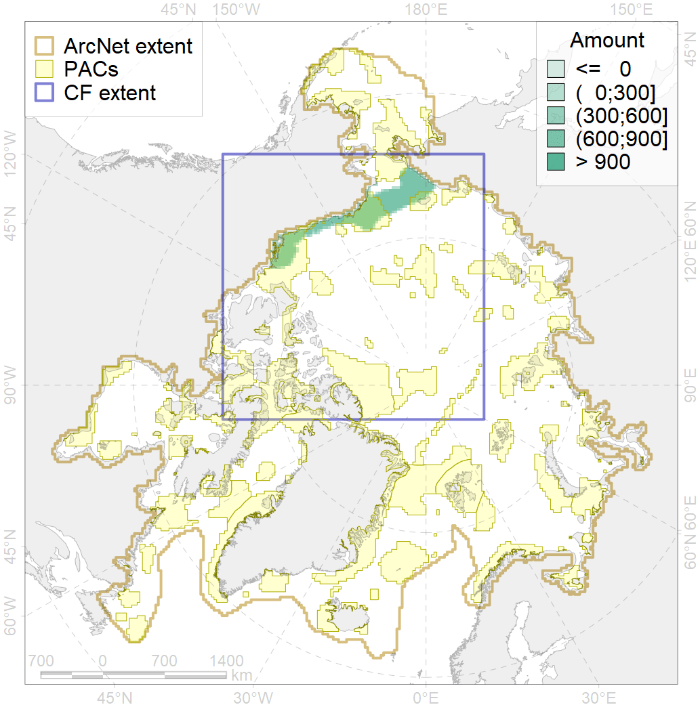
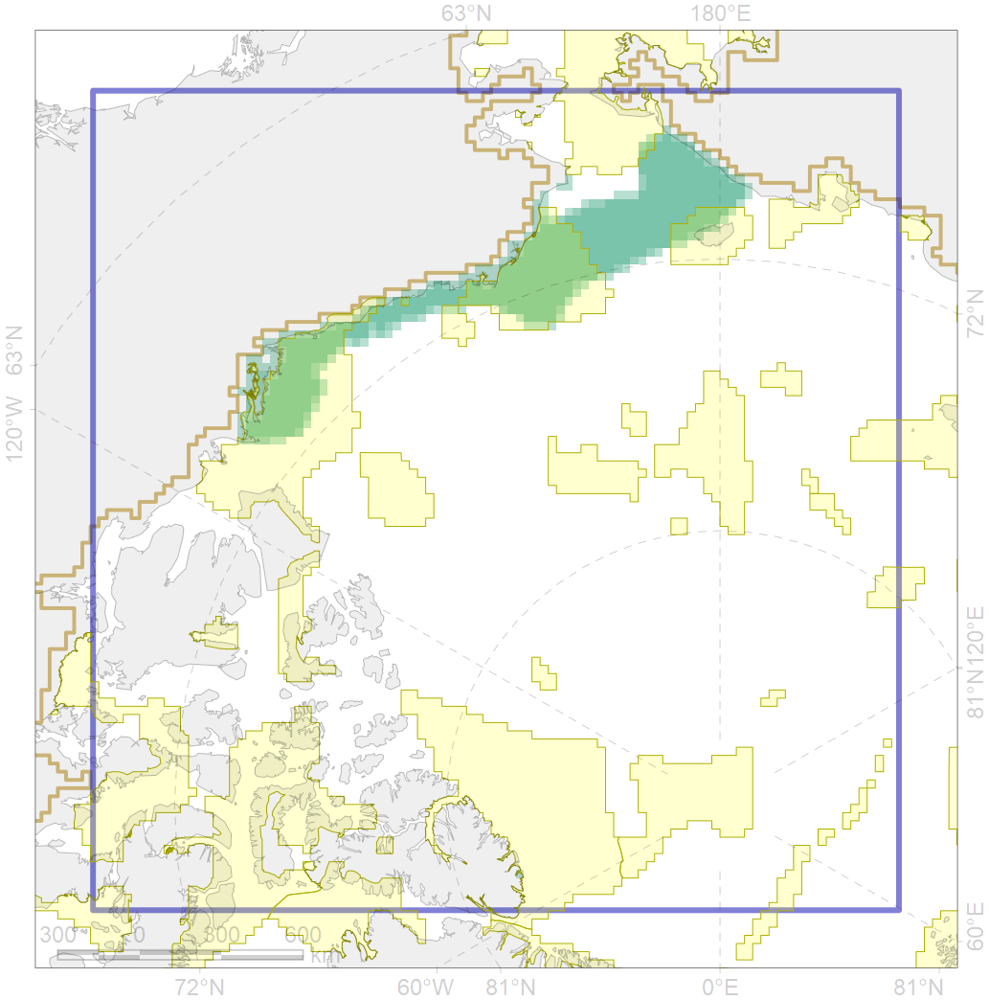

4078

| CF code | 4078 |
| CF name | Fish zoogeography, Arctic Region, High-Arctic Shelf Province, Wrangel – Beaufort District |
| Time Period | 2019 |
| Source(s) | Chernova, produced for this project |
| Seasonality | Jan-Dec |
| Depth Horizon | |
| Methodology | expert opinion based on summarised data of trawl surveys and multiple publications |
| Use Restrictions | unknown |
| Author Name | N. Chernova |
| Notes | |
| Scenario’s Target | 0.1638128 |
| Target Achievement | 0.500 (Scenario: 305.1%) |
| PAC | Share of the Total Amount within the PAC | Share of the Target Achievement for the ArcNet | PAC’s Contribution to the Target Achievement |
|---|---|---|---|
| 5 | 0.6%0.6% | 3.1%3.1% | 1.0%1.0% |
| 7 | 3.6% | 21.1% | 6.9% |
| 54 | 0.0%0.0% | 0.0%0.0% | 0.0%0.0% |
| 60 | 25.8%26.9% | 145.0%147.6% | 47.5%48.4% |
| 61 | 0.2% | 1.4% | 0.5% |
| 62 | 20.1%20.9% | 117.7%119.3% | 38.6%39.1% |
| inner | 50.4%52.2% | 288.2%292.4% | 94.5%95.8% |
| outer | 49.6%52.8% | 16.8%32.5% | 5.5%10.7% |
| † supplement values are for area consistence whereas principal values are for Accenter compatible gridded stats |